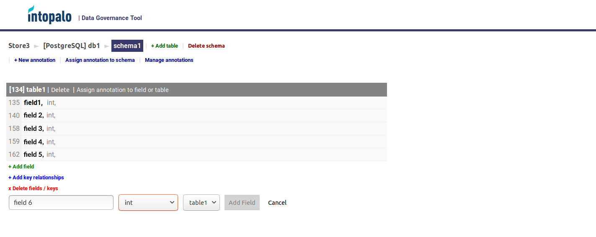
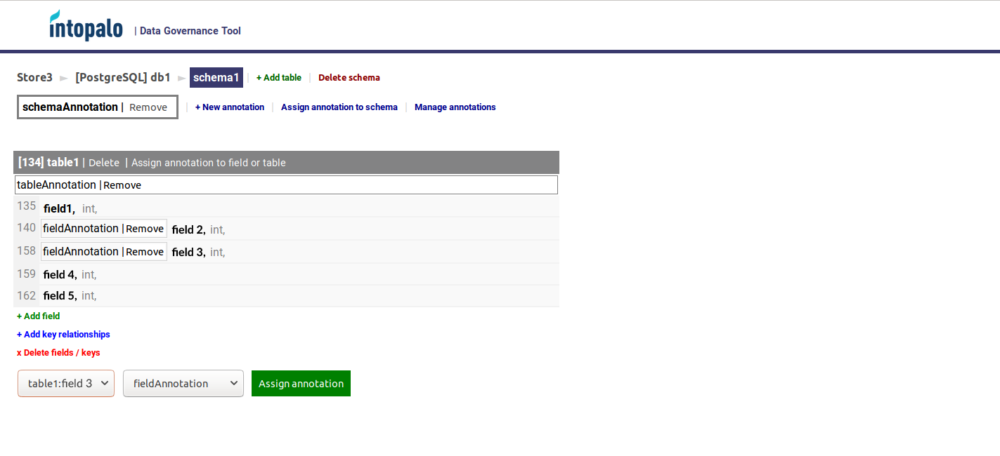
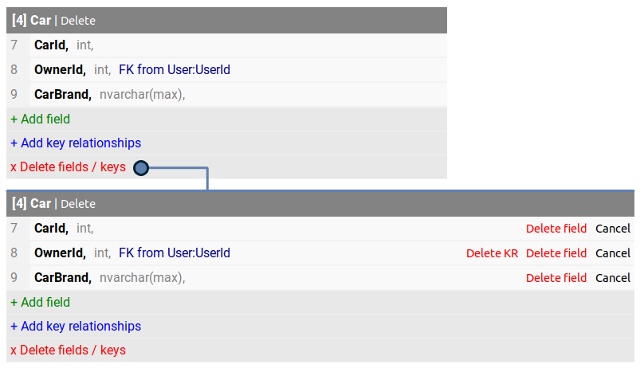

System for Data Governance
TYPE
Student project / GDPR
ROLE
Project Manager, Frontend Developer
TOOLS
Angular 7, CSS Grid, .NET Core, Entity Framework, PostgreSQL, MongoDB, RESTful API, Swagger, Docker
TIMEFRAME
4 months
PROJECT LINK
Problem
GDPR (General Data Protection Regulation) was implemented in May 2018 and caused a lot of controversy for companies operating in EU. Companies are in need for some consistent solution to check their compliance with GDPR.
Customer
Need
PROOF-OF-CONCEPT
- System for collected data governance and visualization to ensure that companies are able to comply with GDPR and/or other data protection regulations
- Internal use first, public tool in the future for security specialists and consultants
Approach
PLANNING
Project lasted for 5 sprints (originally 7) that varied from 2 to 3 weeks due to occured complications. Team also conducted weekly face-to-face meetings and co-design sessions.
UNIVERSAL METADATA MODEL
Model should contain metadata of datastores and work accross several datastore types - relational and non-relational (PostgreSQL and MongoDB). Model also needs to work with structured and unstructured files.
OPEN SOURCE
Project should be developed under MIT license.
GDPR ANNOTATIONS
System needed to support annotations that can be assigned to any possible entity. Those annotations would mark which part of the companies' datastores contain personal and other data based on degree of sensitivity. On a basic level, annotations should work like a custom tag or text descriptions that can be assigned to anything
FRONTEND
System needed a full CRUD support to manipulate with datastores via fast and usable UI.
RESTFUL API
System needed to work through an API to isolate backend from frontend and provide easy-to-use functions to manipulate with the datastores.
OPTIONAL FEATURES
Report generation on user's demand, data anonymization, Hive metastore and data crawlers.
Project lasted for 5 sprints (originally 7) that varied from 2 to 3 weeks due to occured complications. Team also conducted weekly face-to-face meetings and co-design sessions.
UNIVERSAL METADATA MODEL
Model should contain metadata of datastores and work accross several datastore types - relational and non-relational (PostgreSQL and MongoDB). Model also needs to work with structured and unstructured files.
OPEN SOURCE
Project should be developed under MIT license.
GDPR ANNOTATIONS
System needed to support annotations that can be assigned to any possible entity. Those annotations would mark which part of the companies' datastores contain personal and other data based on degree of sensitivity. On a basic level, annotations should work like a custom tag or text descriptions that can be assigned to anything
FRONTEND
System needed a full CRUD support to manipulate with datastores via fast and usable UI.
RESTFUL API
System needed to work through an API to isolate backend from frontend and provide easy-to-use functions to manipulate with the datastores.
OPTIONAL FEATURES
Report generation on user's demand, data anonymization, Hive metastore and data crawlers.
Obstacles and limitations
- Too much time spent on pen&paper discussion and design of the universal data model and backend. This led to a fairly late implementation phase.
- Sudden conflict between couple team members and health issues of our second frontend developer let to departure of 2 (out of 5) team members from the team and project. Project's requirements were adjusted by closely communicating with the customer and work continued as before with 2 backend specialists and me as a frontend developer.
- Some technology was new for team members and it that some took time to get familiar with.
Result
Despite the difficulties, team managed to deliver most of the backlog items, leaving optional items aside. Customer was impressed by our effort given the circumstances and result matched customer's vision of the project.
BACKEND
Backend server can deployed via Docker on any Linux machine and it works with both PosgreSQL and MongoDB databases alongside with any types of files by using Entity Framework. Documentation is also available via Swagger.
FRONTEND
Frontend supports CRUD (except UPDATE that was postponed due to the time cosntraints) and works with the backend server via RESTful API.
User interface consists of 5 main views: datastore view, datastore view, database view, schema view. User is able to perform entity related actions on relevant page (like adding a table is only possible on scheme page). Additionally, user is able to add necessary annotation or select one from the list of created ones and edit them on any page.
Navigation professively narrows down, starting from more of a global view down to schema level: datastores list -> datastore -> database (last level for MongoDB) -> schema (last level for PostgreSQL). User can to navigate between views via breadcrumbs at the top left corner of the page.
Example below shows the UI of the PostgreSQL schema that allows to manipulate with the tables, key relationships and annotations.
Deletion of key relationships and fields is a separate mode that can be enabled for each table separately.
AVAILABLE ON GITHUB
BACKEND
Backend server can deployed via Docker on any Linux machine and it works with both PosgreSQL and MongoDB databases alongside with any types of files by using Entity Framework. Documentation is also available via Swagger.
FRONTEND
Frontend supports CRUD (except UPDATE that was postponed due to the time cosntraints) and works with the backend server via RESTful API.
User interface consists of 5 main views: datastore view, datastore view, database view, schema view. User is able to perform entity related actions on relevant page (like adding a table is only possible on scheme page). Additionally, user is able to add necessary annotation or select one from the list of created ones and edit them on any page.
Navigation professively narrows down, starting from more of a global view down to schema level: datastores list -> datastore -> database (last level for MongoDB) -> schema (last level for PostgreSQL). User can to navigate between views via breadcrumbs at the top left corner of the page.
Example below shows the UI of the PostgreSQL schema that allows to manipulate with the tables, key relationships and annotations.
VIEW SCHEMA PAGE
VIEW SCHEMA PAGE WITH ANNOTATIONS
VIEW DELETION MODE
Feel free to contact me!